YOUR FIELD GUIDE
Vibe Coding for Non-Technical Professionals
Your first website. Your first game. Your next idea.
A website. A game. A repeatable way to turn an idea into working software.
No programming experience required. Bring your favorite chatbot and learn to describe, build, check, save, and publish.
01 / YOUR ROUTE
Two projects. One useful process.
Use this guide as a map. The repository holds the detailed instructions and recovery steps.
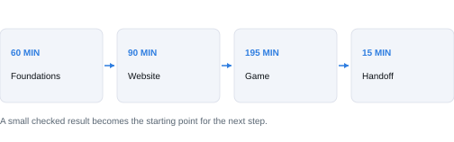
- FOUNDATIONS - 60 minutes. Understand the software lifecycle, then prepare GitHub, Vercel, and your chatbot.
- WEBSITE - 90 minutes. Define one page, build it, test its main action, and publish it.
- GAME - 195 minutes. Choose a pattern, write rules, build a playable loop, improve it, playtest, and publish.
- HANDOFF - 15 minutes. Demonstrate both projects and save your next action.
Quick page finder: AI handoff 3; lifecycle 4; tools 5; setup 6; website 7-9; game 10-12; troubleshooting 13; agents 14-15; resume 16; checklist 17; resources 18.
02 / HAND THE COURSE TO YOUR AI
Start with the right context.
A chatbot can help only with the material and tools it can actually access.
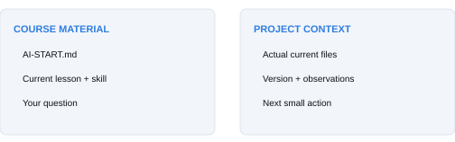
- Open START-HERE.md. If your assistant can read the authorized repository, direct it to AI-START.md.
- If it cannot read the private link, download AI-COURSE-PACK.md and attach it. If file upload fails, paste AI-START.md and the current lesson.
- Ask it to identify the files it received, both projects, and your next checkpoint. A vague summary is not proof of access.
03 / THE FIRST 30 MINUTES
How software gets made.
The software development lifecycle is a set of questions you revisit as you learn.
Discover the user and purpose. Define the smallest useful result. Design the experience and plan small steps. Build one increment. Test the actual behavior. Release the checked version. Maintain it as needs change.
Make each stage concrete
Website: a visitor should find event details and open a directions link. Game: a player should answer five questions, see an accurate score, and play again. Those promises become tests.
04 / THE TOOL MAP
Know what each tool does.
The chatbot helps create files. Your browser shows what those files actually do.
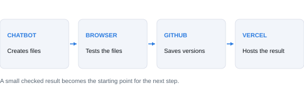
HTML gives a page structure. CSS controls its appearance. JavaScript supplies behavior, such as answering a quiz or restarting a game. Both core projects can run as plain static files.
- CHATBOT: creates or changes project files. Its response is a proposal until checked.
- GITHUB: stores your files and their saved history. A commit is a named checkpoint; a branch is a separate line of changes.
- VERCEL: hosts a deployed version at a URL. Your browser opens that URL; the local copy may differ.
A pull request proposes a branch change for review. A preview deployment helps you inspect a change before a later production release.
05 / GET READY
Choose the route that works.
Start with complete runnable files. Add connected tools only when they help.
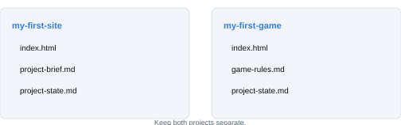
- Create or sign in to GitHub and Vercel using setup-guide.md. Keep your account recovery details private.
- Choose your chatbot. Ask it for a downloadable index.html, or complete plain-text contents you can save.
- Create a website folder and learner-owned repository. Keep the game in a second folder and repository later.
- Open the exported file in your browser. Confirm the filename ends in .html, not .html.txt, and that it is plain text.
06 / WEBSITE BRIEF
Give the page one clear job.
Start with a small, specific promise to one kind of visitor.
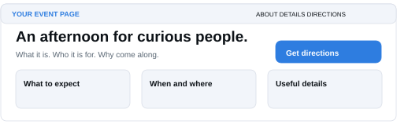
Example: a fictional community event page. A visitor can learn what the event is, find when and where it takes place, and follow a real directions link. No registration system or payment is needed.
- Write the audience and desired outcome in one sentence.
- Choose a heading, two or three sections, a visual treatment, and the main link or button.
- Name five checks: clear purpose, correct content, main action, navigation, and phone layout.
07 / WEBSITE BUILD
Build small. Look. Then improve.
A specific change is easier to check than an instruction to make everything better.
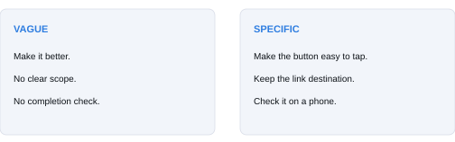
- Ask for the smallest complete page. A single index.html can contain its styles and behavior.
- Save and open the actual exported file. If separate images or scripts are supplied, keep their paths intact.
- Try the main action. Save a working copy before asking for one improvement.
- Repeat the same check after the change and inspect anything that should have stayed the same.
08 / WEBSITE RELEASE
Check before you share.
Publishing and verification are two separate steps.
- Have another person explain the page and follow its main action. Try all links, keyboard navigation, and a narrow screen. Record real observations.
- Upload the checked files, not the ZIP, to your own website repository. Confirm index.html is at the selected project root.
- Import that repository into the correct Vercel account/project. For plain static files, follow the Other / empty build command setup in setup-guide.md.
- Confirm the intended publication, deploy, and repeat the main checks at the actual URL. Record that URL and the released version.
If deployment fails, keep your working files and record the exact error. A green build indicator is not evidence that the main button works.
09 / GAME BRIEF
Choose one action and a short round.
Use a familiar pattern, then make the theme your own.
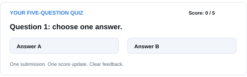
Three starter patterns: a small puzzle, a one-button obstacle game, or a paddle game. These draw on Promptle, Flappy Brains, and Brain Pong in the All Things AI Arcade.
The simplest worked example
Create a five-question quiz. One submitted answer per question. A correct answer earns one point. After five questions, show a score from 0 to 5 and a Play again button. Replay resets the score and question index.
10 / GAME STATE
Make the whole loop work.
State is what the game remembers: where you are, the score, and whether the round is over.
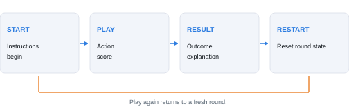
- START: show short instructions and one clear way to begin.
- PLAY: accept the intended input and update progress or score once.
- RESULT: end the round, explain the outcome, and stop inappropriate input.
- RESTART: reset the agreed state and begin a fresh round without duplicated timers or actions.
11 / GAME PLAYTEST
Watch a new player.
Two minutes without coaching can reveal what your own testing misses.
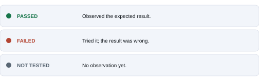
- Give the current version to a partner. Let them start, play, finish, and restart without hints.
- Record hesitation, control errors, unfair outcomes, and scoring surprises. Ask whether they would replay and why.
- Fix the biggest issue. Tune only one setting, such as speed or time, then repeat the same test.
- Publish to a separate game repository and Vercel project. Repeat a round and restart at the deployed URL.
12 / GET UNSTUCK
Diagnose one thing at a time.
Keep the last working version. Avoid turning a small failure into a full rewrite.
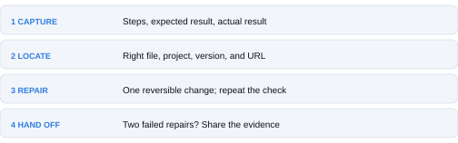
- NAME THE SYMPTOM: exact click or input, expected result, actual result, error text, file or URL, and browser/device.
- CHECK THE CONTEXT: correct project, latest file, filename, folder path, branch, and deployment.
- TRY ONE REPAIR: make the smallest reversible change and repeat the same check.
- ESCALATE WITH EVIDENCE: after two unsuccessful focused repairs, summarize what happened and ask for help.
13 / OPTIONAL MULTIPLE AGENTS
Give every helper a clear job.
Start with one builder and one reviewer. More agents are useful only when the work can be separated.
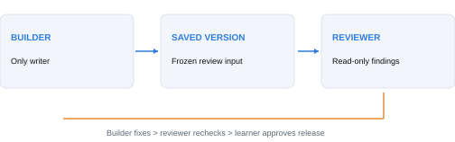
- TWO CHATS: let one assistant build. Give another chat the same brief and a frozen copy to review read-only. Send useful findings back to the builder.
- NATIVE SUBAGENTS: where supported, ask for one bounded helper, such as drafting acceptance checks. Keep one writer on the application files.
- ISOLATED WORKTREES: advanced coding work can use separate folders and branches. A coordinator integrates the results and repeats the tests.
14 / YOUR PROJECT INSTRUCTIONS
Give your AI a working agreement.
AGENTS.md is a short instruction file for your own project, not a magic installation command.
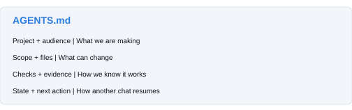
- Copy templates/AGENTS.md into your learner project as AGENTS.md. Fill in the project identity, intended user, and scope.
- Add your expected behavior, how to open the project, how to test it, and where to record progress.
- Ask your assistant to read and summarize the rules before making changes. In ordinary chat, paste or attach the file.
- Use templates/CLAUDE.md only as described in the optional agent guide. Product discovery differs by client and version.
15 / PAUSE AND RESUME
Save context outside the chat.
Your files and a short state record make it easier to switch assistants or continue tomorrow.
- Save the latest working project files and name the checkpoint or commit.
- Update project-state.md: goal, scope, folder/repository, current stage, tested behavior, unresolved issue, and one next action.
- Give the next assistant both the state record and the actual files. Include the relevant course lesson or skill.
- Ask it to identify the version and missing evidence before continuing. Keep publication permission tied to the intended destination.
16 / FINISH WITH EVIDENCE
What does done look like?
Show the result, identify the version, and state the limits.
Website
A visitor understands the purpose, reads accurate content, follows the primary action, uses navigation, and can read the page on a phone-sized screen. The published URL has been checked, or the deployment blocker is recorded.
Game
A new player understands the instructions, uses the supported controls, receives correct scoring and a clear result, and can restart repeatedly. The deployed version has been played, or working files and the blocker are retained.
Your handoff
Name the owner, files, repository, version, URL, test report, known limits, and next improvement. Demonstrate the website action and a full game round. Explain one assumption you corrected using evidence.
17 / KEEP THIS REFERENCE
The right help, one click away.
All core instructions are readable as text, so your chatbot can use them alongside you.
- START-HERE.md - access the course, choose a route, and give your AI the starting prompt.
- AI-COURSE-PACK.md - a single text file containing the current learning instructions, templates, and skills.
- docs/website-walkthrough.md and docs/game-walkthrough.md - worked examples and stage prompts.
- docs/troubleshooting.md - symptom-led recovery. templates/help-request.md - an evidence-based request for help.
- docs/multiple-agents.md and templates/AGENTS.md - optional collaboration and project instructions.
- handouts/student-workbook.md and templates/project-state.md - records you can reuse in both projects.
Sources and edition notes
The setup guide cites official GitHub, Vercel, OpenAI, and Claude documentation. Product guidance was checked October 5, 2026; screens and account availability may change. The source map records the original website course, existing presentation, and Arcade research.
Brand palette and logo come from the existing All Things AI class presentation. Diagrams in this guide are conceptual illustrations, not screenshots of provider interfaces. The detailed Markdown is the living reference.